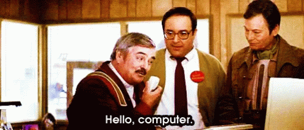
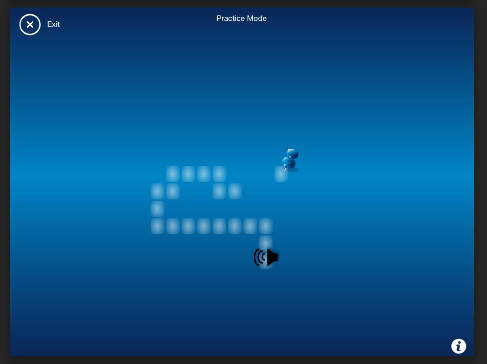
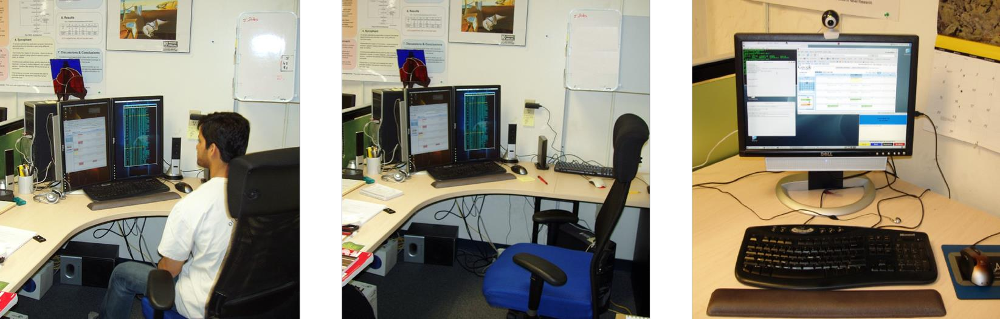
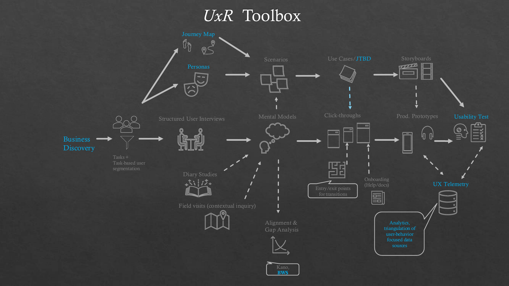
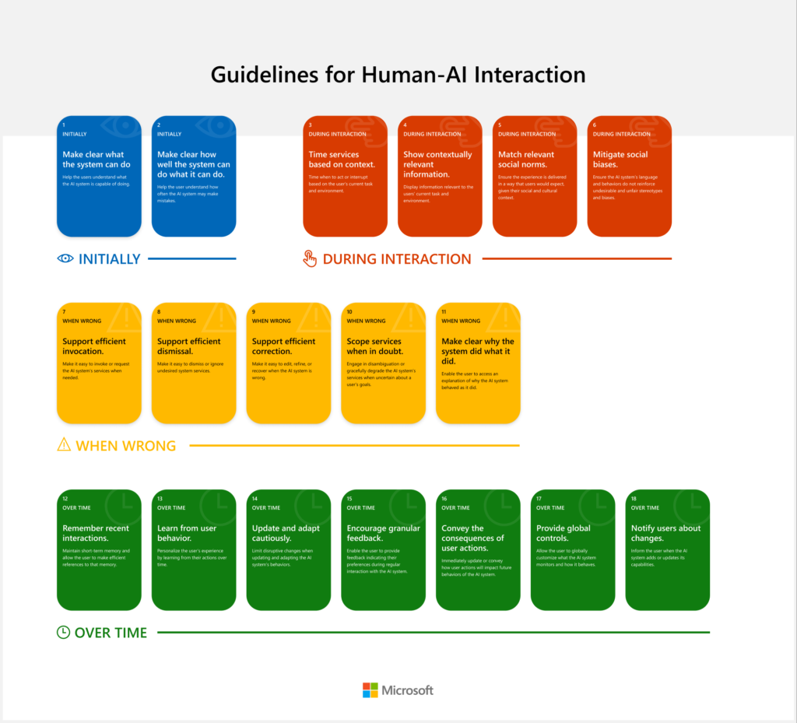
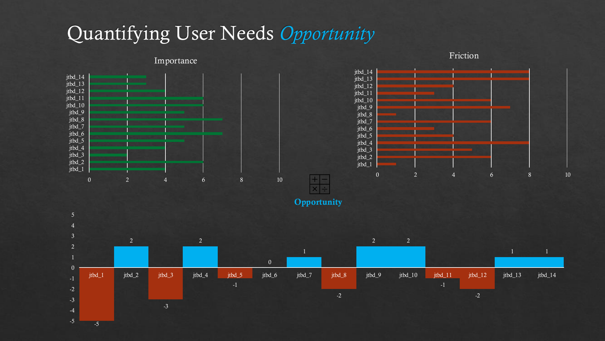
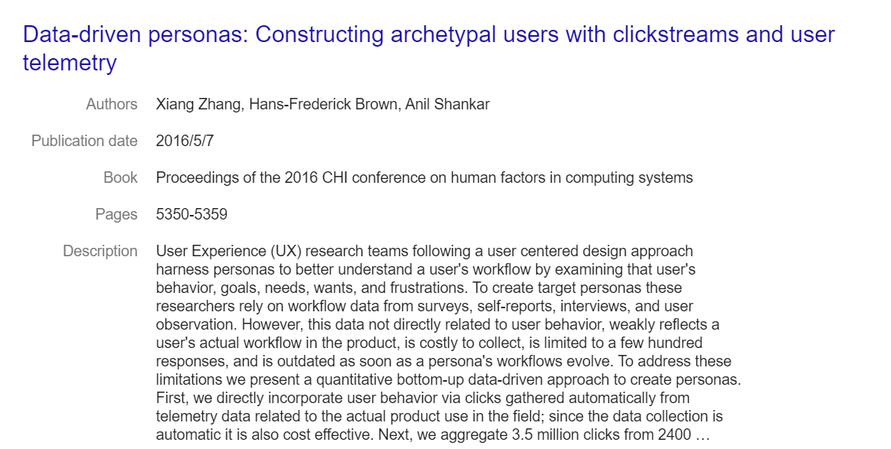
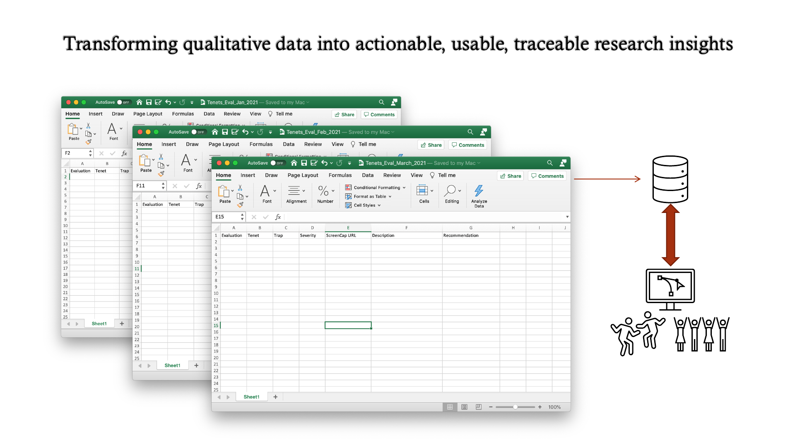

Anil Gypsy Wild · Personal philosophy
My Research Philosophy
Technology should adapt to people.
I study the gap between what people intend and what interfaces demand, then use evidence to reduce it.
A personal philosophy developed across my research career: respect human capability, understand context, and make technology responsive to people.
Explore the approachThe interaction contract
Why must the person adapt?
In Star Trek IV, Scotty addresses a twentieth century computer, then speaks into its mouse. Told to use the keyboard, he responds: “How quaint.” The joke exposes a mismatch between the person’s mental model and the interface’s interaction model.
That mismatch is central to my research philosophy. A capable person should not have to become an expert in the machine’s conventions to accomplish an ordinary goal.
AI should reduce the burden of interaction
My concern with AI is the same: when an interface requires elaborate prompts, repeated reformulation, and constant checking, it shifts cognitive work onto the user. Apparent intelligence is insufficient if the person must continually compensate for the system.
I evaluate task success, workload, error recovery, and calibrated trust: can people achieve their goals, recognize limitations, correct mistakes, and retain control?
The film is an illustration of an interaction problem. The AI argument states my design position, rather than a measured finding from the portfolio.


Human computer interaction
Adapt to the person and the context
Interfaces should accommodate people’s goals, perceptual abilities, and working conditions. My portfolio connects sensor based behavioral modeling with a practical question: how could an interface learn a person’s preferences and respond appropriately?
SoundPoint extends that concern to hearing adjustment. Paper prototypes, contextual inquiry, co-design, usability evaluation, and telemetry connect the interaction to the experience it is intended to support.


Research strategy
Select methods for the uncertainty
I begin with the decision and the evidence it requires. Contextual inquiry reveals work practices; structured interviews and diary studies expose needs; prioritization methods test tradeoffs; prototypes and usability studies evaluate proposed interactions. Telemetry connects those findings to observed use.


Extending the toolbox to AI interactions
AI introduces additional questions about expectations, guidance, correction, and appropriate reliance. The portfolio brings human AI interaction guidance into the same process of specifying needs and evaluating behavior.


Needs discovery
Understand the job before proposing a feature
Jobs to Be Done anchors research in the progress people seek within a usage scenario. I elicit importance and friction, examine capability gaps, and translate the findings into scenarios that Product, Design, and Engineering can evaluate.
In the portfolio example, I compared researcher grouping, k-means clustering, and stakeholder card sorting to organize 14 jobs into three scenarios. These scenarios provided a basis for subsequent hypotheses and task based evaluation.



Mixed methods
Turn competing needs into product priorities
For IT administrator collaboration, structured interviews and qualitative themes informed a Best Worst Scaling study. The portfolio reports 510 responses, followed by a subsequent Market Research survey with more than 2,000 responses.
Troubleshooting, uninterrupted work, and delegation emerged as priorities. The research helped Product deprioritize task management, a mobile admin center, and social features, while surfacing licensing and billing issues.
These are historical portfolio findings, not results from the Compassion studies.
Decision influence
Measure relative priority, then revisit the roadmap
The contribution was a clearer product direction: evidence helped teams decide which initiatives to advance, defer, or investigate.
Portfolio, pp. 16–18.
Measurement validity
Validate telemetry against observed behavior
I use a clean application instance and known actions to check whether recorded events reconstruct the behavior they are meant to represent. That ground truth supports more defensible UX baselines, trend interpretation, and sampling.
A logged event becomes useful evidence when its relationship to the user’s action is understood.


Research infrastructure
Make findings traceable and reusable
Structured issue records connect an observation to its interaction principle, severity, screenshot, explanation, and recommendation. A shared repository makes those records available for synthesis across evaluations.
I then examine issue patterns to identify recurring understandability and efficiency problems. Qualitative evidence remains inspectable while supporting decisions about the next evaluation or design change.

